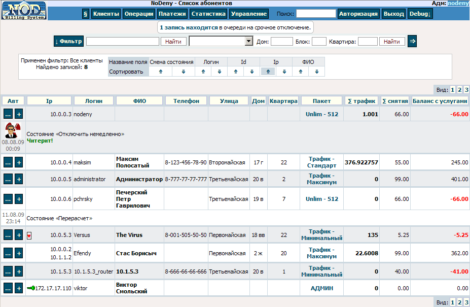

| Биллинговая система NoDeny. Работа с биллингом |
- Детали системы
- Доступ к админке
- Система привилегий администратора
- Авторизация в админке
- Создание учетной записи клиента
- Изменение данных клиента
- Дополнительные данные клиента
- Работа со списком клиентов
- Платежи
- Опциональные платежи
- Тарификация трафика
- Закрытие месяца
- Удаление клиента
- Клиенты, имеющие несколько ip-адресов
- Блокировка доступа
- Проблема "ухода в минус"
- Карточки пополнения счета
- Почта
- Топология
- Оборудование
- Задания работникам
- Клиентская статистика
- Сообщения об ошибках
- Выдача ip-адресов по DCHP
- Бекап
- Модуль платежных терминалов ОСМП
Доступ к админке
Доступ к управлению NoDeny осуществляется через браузер:
https://server/cgi-bin/adm/adm.pl
где server - имя или ip сервера с установленной админкой.
Ошибки доступа к админке
В верхнем меню админки выбираем «Операции», затем «Новый клиент».
При занесении нового клиента система автоматически устанавливает состояние клиентской записи «На подключении». Такой клиент будет выделяться в списке клиентов, также при применении фильтра «вывести всех на подключении» будет выведен список клиентов в этом состоянии, отсортированный по дате занесения договора (более старые вверху). Существует 2 состояния «на подключении». Второе именуется как «На подключении, настроить». Заметим, что состояния рекомендованы исходя из опыта работы нескольких сетей и не навязываются. Вы можете их игнорировать. Тем не менее, рекомендованная схема работы: клиент вносится в базу данных, устанавливается (автоматически) состояние «на подключении», вносятся комментарии (когда подключить, проблемы и т.д), при подключении переводят клиента в состояние «На подключении, настроить». При появлении трафика либо первой авторизации, клиент автоматически выводится из состояния «на подключении» и удаляется комментарий, относящийся к подключению. Состояние «настроить» отличается от состояния «На подключении, настроить» тем, что первое нужно давать только уже работающим клиентам.
При создании данных клиента, также автоматически устанавливается значение параметра «день начала потребления услуг» в -1 (минус один). Этот параметр регулирует ситуацию, когда новый клиент начинает работать не с первого числа месяца, таким образом ему следовало бы создать персональный пакет пропорциональный количеству дней, которые он потребляет услуги. Например, логично было бы клиенту, подключившемуся в последний день месяца, выдать пакет с предоплаченным трафиком и стоимостью в 30 раз меньшими чем оригинальный пакет. Как только клиент произведет первую авторизацию или получит 1й байт входящего трафика, параметр «день начала потребления услуг» будет установлен в значение дня текущего месяца и для него будет «создан» виртуальный пакет с данными, пропорциональными количеству оставшихся дней в месяце. С наступлением нового месяца у всех клиентов (кроме тех, кто не начал пользоваться услугами) «день начала потребления услуг» устанавливается в ноль, что будет отключать «создание» виртуального пакета.
Имеется возможность группировать несколько учетных записей (например, у клиента несколько компьютеров) в одну, при этом одна запись будет именоваться основной, а остальные - алиасными. Для добавления алиасных записей вам необходимо открыть данные основной записи и выбрать пункт «добавить алиас». Читайте о клиентах, имеющих несколько ip-адресов.
Группа - для удобства администрирования следует группировать клиентов. Например, удобно создать группы «Администраторы», «сервера» и ограничить к ним доступ обычным администраторам. Создать группу «Удаленные» и перемещать в эту группу клиентов, разорвавших контракты, - это лучше удаления т.к за такими клиентами ведется финансовая история, сохраняются их адреса и т.д, при спорных вопросах или при переподключении всегда можно будет восстановить данные. Группы задаются в настройках.
При выборе ip адреса для клиента можете воспользоваться системой выдачи ip адресов, которая в зависимости от вашей топологии (сегментации) выдаст первый незанятый ip адрес для заданного адреса подключения. Для использования этой системы необходимо предварительно заполнить раздел [топология]. В этом разделе указываются точки подключения (например ящики с оборудованием) и их адреса. Каждая точка может иметь свой диапазон ip адресов (либо несколько точек имеют один диапазон). Диапазон указывается с начального ip и заканчивается адресом xx.xx.xx.254. При выборе нужной улицы и дома будет предложен самый нижний (начиная с начального) незанятый ip адрес, если по нему щелкнуть, то он автоматически занесется в поле «ip адрес»:
Кроме того, предусмотрен механизм контроля допустимости ip-адреса для определенной группы клиентов - в настройках группы можно задать список подсетей, из которых разрешено выдавать ip клиентам группы. Этот механизм исключает ошибки, когда клиенту в определенном районе назначается ip-адрес, не смаршрутизированный на маршрутизатор этого района.
Клиент внесен в базу данных, через некоторое время (в настройках биллинга «время обновления информации о пользователях из базы данных») он уже сможет иметь доступ в интернет.
Перейдите в раздел «Клиенты» и выберите в списке нужного клиента - щелкните по ссылке в виде его логина. Вы попадете на страницу редактирования данных клиента.
В зависимости от привилегий администратора многие функции могут быть недоступны и не отображаться некоторые поля.
Учтите, что любые изменения данных клиентов производятся в базе, которую периодически перечитывает ядро NoDeny (nodeny.pl). Т.о. если вы измените пароль клиента, либо пакет, либо запретите/разрешите доступ клиенту, изменения не проявятся мгновенно - должно пройти время перечитывания списка клиентов серверной частью (время указывается в настройках, рекомендовано 5 минут). Для ускорения вы можете послать сигнал перечитывания списка клиентов (если у вашего логина есть на это права).
Информация о каждом измененном поле данных клиента регистрируется в таблице платежей как событие. Таким образом сохраняется хронология событий с регистрацией измененных данных, даты изменения, администратора внесшим изменения.
Данные учетных записей клиентов делятся на 2 типа:
- обязательные;
- необязательные.
К первому типу относятся такие данные, как логин, баланс, пакет тарификации и др. С другой стороны, в каждой сети могут быть свои требования по хранению иных параметров, например, необходимо регистрировать паспортные данные на каждого клиента. Таких дополнительных данных у каждой сети может быть множество. Поэтому NoDeny предлагает механизм гибкого управления этими данными, которые именуются как дополнительные.
Дополнительные данные - это набор заранее запрограммированных полей, каждое из которых имеет свой тип. Набор полей носит название «шаблон дополнительных данных», шаблоны задаются в главных настройках. Примером часто используемого шаблона является «адрес». Ранее поля адреса были обязательными, были фиксированного количества и имели статические названия. Такими полями были: улица, дом, квартира, этаж. Очевидно, что некоторым организациям этого списка будет недостаточно - им нужны поля "блок дома", "подъезд", а некоторым даже поле "город". NoDeny предоставляет возможность указать свой список полей, исключив ненужные и добавив необходимые.
По умолчанию при инсталляции некоторые поля шаблона «адрес» (улица, дом, блок, подъезд, этаж, квартира, телефон, комментарий) будут созданы автоматически. Для того, чтобы добавить или исключить поля адреса, необходимо зайти в меню «Операции» → «Настройки» → «Дополнительные поляв». Должен отобразиться список полей: к какому шаблону они относятся (в нашем случае это «адрес»), название и тип. Тип поля может принимать одно из следующих значений:
- целое;
- целое положительное;
- вещественное;
- вещественное положительное;
- строковое однострочное;
- строковое многострочное;
- да/нет;
- привязка к объекту;
- выпадающий список;
- пароль.
К примеру, у поля «номер дома» тип «целое положительное». Если же в вашем городе существуют не цифровые дома, то вы можете поменять тип на строковый. Вы можете добавить строковое поле «город».
Кроме типа, у поля есть название и алиас. Название отображается администратору в процессе работы. Например, вы можете переименовать поле «квартира» в «кабинет», если ваша сеть - госучереждение.
Алиас - это внутреннее название поля. Алиас позволяет NoDeny понять назначение данного поля. Все дополнительные данные для NoDeny - это куча безликой информации. Чтобы NoDeny понял, что поле представляет собой номер дома, алиас необходимо выставить в значение «_adr_house». Вообще, алиас необязателен к заполнению. Однако, если вы хотите осуществлять поиск по адресу, то желательно полям прописать алиасы:
| Улица | p_street:street:name_street |
| Дом | _adr_house |
| Блок | _adr_block |
| Подъезд | _adr_front_door |
| Этаж | _adr_floor |
| Квартира | _adr_room |
| Телефон | _adr_telefon |
Платежи
Виды платежей:
- безналичные;
- наличные;
- опционные;
- временные.
Как не трудно догадаться, платежи непосредственно влияют на баланс клиента. Сумма всех проведенных платежей (пополнения счета, снятия за услуги, бонусные начисления и т.д.) и есть баланс клиента. Кроме этого, баланс хранится непосредственно в учетной записи клиента. Доверенному администратору могут быть выданы права на редактирование баланса с исключительных случаях, в реальности которые практически никогда не потребуются (по крайней мере, автор в своей сети никогда не использовал эту возможность). То есть все управление балансом клиента идет через платежи, которые могут быть проведены как администратором так и автоматически, например, при пополнении счета через карточку пополнения.
Важной характеристикой платежа является признак наличности или безналичности. Этот признак предназначен строго для отчетности, поскольку позволяет быть 100%-но информированным сколько у какого администратора/реализатора наличности «на руках».
В связи с этим важно четко запомнить всего одно простое правило: Если администратор принимает/отдает реальные (наличные) деньги - это считается наличным платежом.
Например, получение наличных денег от клиента при подключении, пополнении счета, возврат наличных, выдача зарплаты, покупка оборудования, материалов - наличные платежи.
Снятия за услуги (интернет, дополнительный Ip адрес, настройка, стоимость подключения), премирование, штрафы, перевод с другого счета, перевод на другой счет, банковский перевод, пополнение через карточки пополнения счета - это все безналичные платежи, поскольку деньги не проходят через руки администратора, проводящего платеж.
Придерживаясь порядка в платежах, т.е устанавливая галочку нал/безнал при их проведении, вы всегда сможете проконтролировать наличность на руках у каждого администратора в любой момент времени.
Примеры. Как следует поступать при подключении клиента к сети:
Допустим, стоимость подключения 150 грн. Клиент подписывает договор и платит наличностью 200 грн чтобы 50 грн сверх 150 были на счету для дальнейших оплат услуг. Администратор, принимающий наличность, проводит 200 грн без признака «безнал» на счет клиента. После чего проводит безналичный платеж «-150 грн» и в комментарии для клиента указывает «стоимость подключения».
После таких операций, по отчетности, на счету абонента будет 50 грн, а «на руках» администратора 200 грн.
Далее, выясняется, что клиент подключился по совету своего соседа, а, допустим, по правилам сети, мы обязаны премировать таких людей. Проводим на соседа безналом, к примеру, 30 грн и в комментариях указываем «премия за приведенного клиента такого-то».
Клиент попросил вас установить ему на компьютер Linux, за это вы договорились снять со счета клиента 100 грн в оплату за эту услугу. Т.к. реальной передачи денег не произошло, то при внесении значения «-100» (минус 100) нужно ставить галочку «безнал», благодаря чему счет клиента уменьшится на 100гр, но состоянии кассы не изменится. В дальнейшем пользователь вносит наличные и задолженность погашается. Так же рекомендуется в поле «комментарий» сделать пометку, например «за установку Linux» - пользователь при просмотре своей статистики будет видеть за что с него были сняты деньги.
Все денежные операции, касающиеся сети, но не касающиеся клиентов напрямую, должны быть осуществлены через пункт «Затраты сети». Например, плата вышестоящему провайдеру за канал в интернет, затраты на покупку оборудования, финансирование предприятия и т.д. Все эти действия должны оказывать влияние на кассу. Зарплаты рекомендуется проводить через пункт «зарплаты работникам» для более удобного получения статистики. Если вы не используете модуль «работники», можете проводить зарплаты как затраты сети.
При просмотре списка платежей вы можете отредактировать/удалить любой платеж (если есть права). Для этого нажмите на «→» в последней колонке напротив соответствующего платежа. После редактирования платеж помечается как редактированный - указывается время и администратор изменивший запись. Администратор с соответствующими привилегиями может убирать такие пометки.
Редактирование платежей относительно небезопасная операция, поскольку нет 100%-й гарантии лояльности работников, проводящих платежи - возможно отредактировать платежи, проведенные ранее и таким образом изменить баланс клиента так, чтобы это не было заметно. С другой стороны никто не застрахован от ошибок, поэтому рекомендуем использовать удобную возможность: в правах администратора разрешить редактировать только свои платежи и только если время их проведения не старше чем 10 минут от момента редактирования.
Если у вас работает(ют) человек, принимающий платежи, то в момент забора наличных у него необходимо оформлять передачу денег между администраторами (кнопка «передача наличных»). Т.о вы можете контролировать сколько наличных на руках у каждого из администраторов.
Временные платежи позволяют временно разрешить доступ в интернет клиенту. Например, у клиента отрицательный баланс в 200 рублей, он звонит и сообщает, что имеет возможность заплатить только через неделю. В таком случае удобно не убирать границу отключения (или ее понижать), а осуществить временный платеж в 200 рублей сроком 7 дней. Через 7 дней платеж удалится автоматически и клиент будет автоматически заблокирован если не сдержал свое обещание. Какие плюсы таких платежей:
- нет необходимости контролировать клиента, это делается автоматически в заданное количество дней;
- нет необходимости понижать границу отключения, поскольку можно забыть поднять ее впоследствии;
- ведется история по временным платежам;
- в клиентской статистике абонент видит сообщение о том, что у него временный платеж и что неплохо-бы заплатить за услуги.
Запомните - временные платежи безопасны - они гарантированно будут удалены системой в любом случае.
Временный платеж может быть отрицательным - имеет смысл для случая «наказание лишением доступа в интернет на Х суток» - после удаления отрицательного платежа баланс станет положительным и доступ будет разрешен.
В особых случаях (регулируется привилегиями) платеж можно провести «задним числом» для решения конфликтов с клиентами из-за невовремя внесенных платежей.
Опциональные платежи
Опциональные платежи - платежи, которые активируются клиентом самостоятельно через клиентскую статистику и позволяют за дополнительную плату улучшить некоторые условия тарифного плана. Реализованы улучшения двух типов:
- модификатор скорости: повышение скорости на определенный (оплаченный) период времени для определенного класса трафика;
- модификатор трафика: покупка дополнительного предоплаченного количества трафика для определенного пакета.
Первый тип обычно используется для тарифов, в которых указано ограничение по скорости, например для анлимов.
Опциональный платеж имеет обязательное свойство - срок действия, причем привязка к границе месяца отсутствует - опцию можно активировать в любой день в любое время. Таким же образом действие пакета может закончится в любой день месяца, в зависимости от срока действия, который может быть любым от нескольких минут до 60 дней.
По окончанию периода действия опции, «улучшения» активированные данной опцией, прекращают свое действие, вне зависимости от того использован ли выделенный трафик либо же нет.
Тип модификатора (по скорости либо по трафику) определяется трафиком, который указан в опции: если трафик отрицательное число, то на это количество мегабайт уменьшится трафик клиента (определенного направления). При этом если результирующий трафик окажется отрицательным числом - это совершенно нормальное явление и означает «запас трафика». Если число, указанное в опции, положительное - это модификатор скорости. Модификатор скорости действует только в пределах выделенного трафика. например, можно создать такую опцию:
Доступ к ресурсам video.xx.xx и mp3.xx.xx на неограниченной скорости. Лимиты: срок действия 10 дней либо использование 15 Гб трафика данных ресурсов
Действие этой опции следующее. Клиент, имеющий тарифный план, скажем, unlim 512k, может в любой день активировать опцию при условии остатка на балансе не менее стоимости опции, а также при отсутствии временных платежей. После этого, для направления, описывающего ресурсы video.xx.xx и mp3.xx.xx, снимаются лимиты по скорости на срок 10 дней от текущего момента времени (с учетом часа и минут). Как только клиент потребит 15Гб трафика данных ресурсов, скорость вернется в прежнее (512k) значение. Если же клиент не потребит весь трафик, то через 10 дней действие опции в любом случае закончится.
Лимиты по трафику могут отсутствовать, тогда улучшение будет заключаться в повышении скорости на определенный период времени без учета трафика.
Возможно активировать несколько опций несколько раз в месяц, однако невозможно активировать опцию, которая уже активна - срок действия которого не закончен либо же не выработан опциональный трафик.
Для каждого тарифного плана может быть разрешен свой список опций. Для некоторых тарифов можно отключить опции полностью.
Имеется возможность создания «пака опций» - активировать сразу несколько опций за определенную цену, меньшую чем суммарной стоимости входящих опций.
Одной из наиболее частых операций, производимых администраторами, несомненно является нахождение клиента по заданным критериям. Для удобства, строка поиска присутствует на всех страницах NoDeny в верхнем меню справа - поле ввода, поиск по значению которого активизируется но нажатию клавиши enter.
Удобство поиска обеспечивается адаптивностью под вводимые данные. Вы можете ввести имя, фамилию или их фрагмент, если клиент произнес невнятно по телефону, логин, ip, фрагмен ip или подсеть, адрес подключения.
По умолчанию производится поиск по ФИО, однако дополнительно выводится количество записей, попадающих под поиск по каждому критерию. Так при поиске строки «27.50» будут выведены ip адреса, которые оканчиваются на 27.50, будут выведены адреса подключения, у которых дом 27 и квартира 50, логины в которых присутствует строка «27.50». Дополнительное удобство обеспечивается автоматической транслитерацией, т.е. вы можете ошибиться в раскладке клавиатуры и ввести, скажем, «bdfyjd». NoDeny произведет транслитерацию в «иванов» и выдаст результат для этой строки. Дополнительные преобразования покажем на примере, ввод: «12ю77» или «12/77» найдет ip, попадающие под шаблон хх.хх.12.50, а также записи с адресом подключения дом 12 кв. 77. Ввод: 10.1.2. - будут найдены ip, попадающие под шаблон 10.1.2.xx. Ввод: 10. - 10.хх.хх.хх.
На странице «клиенты» присутствует дополнительное поле поиска по дому и/или квартире. В нем можно указывать сокращенное название улицы. Например, введя «до108», будут найдены все клиенты в домах 108 по улицам, названия которых начинаются с «до».

На скриншоте видно:
В таблице со списком клиентов, в первой колонке отображается состояние авторизации в данный момент:
- если нет ключика - клиент не авторизован;
- если ключик зеленый - клиент авторизован и доступ в инет разрешен;
- если ключик желтый - клиент авторизован и доступ разрешен только в подсети класса 2 (например, только городские);
- если ключик серый - клиент авторизован и доступ в инет закрыт самим клиентом;
- если ключик красный - клиент авторизован и доступ в инет заблокирован, причину блокировки можно узнать подведя курсор к ключику;
В следующей колонке отображается ip и логин клиента, а также если есть - его алиасные записи. На одной учетной записи можно оганизовать несколько алиасных учетных записей для разных компьютеров либо даже для разных физических лиц. Адреса, под которыми авторизован клиент, выделяются.
В колонке трафика может быть один или два числа в зависимости от пакета клиента. Это значения: «направление 1» и «направление 2» (названия направлений задаются в настройках).
В колонке «баланс начало месяца» указывается текущий баланс клиента без учета снятия за потребленные услуги в этом месяце.
В последней колонке указывается баланс с учетом снятия за месяц. Также может указываться граница, при балансе ниже которой доступ в интернет будет заблокирован автоматически.
При нажатии на кнопку в столбце балансов будут показаны только те клиенты, у которых отрицательный баланс
Нажатие на кнопку [+] слева от учетной записи клиента, приводит к выводу дополнительных кнопок для осуществления операций над данной учетной записью (пополнение счета, показ абонента на карте, группировка по дому, точке подключения, выдача задания работникам)
При нажатии на кнопку «адрес» произойдет группировка клиентов по улице, дому и сортировка квартир по возрастанию. Удобно если ip-адреса присваиваются в разброс. Также в этом режиме наглядно выводится информация о «спаренных» клиентах - есть сети практикующие два стомегабитных подключения на 8-жильную витую пару.
Если учетной записи доступ заблокирован, то ее фон красного цвета. Если красного цвета только фон участка с трафиком, то запись заблокирована не полностью - только доступ в интернет (это регулируется пакетом тарификации - должен быть установлен параметр «блокировать при выработке предоплаченного трафика»)
Закрытие месяца
Расчетный период системы NoDeny - месяц. C 1 по 31 число происходит накопление трафика в учетной записи клиента, после чего вступает в действие новый тарифный план, для которого необходимо трафик учитывать с нуля, поэтому при наступлении нового месяца, должны быть выполнены следующие действия:
- формирование платежа-снятия согласно пакета тарификации клиента и потребленного им трафика;
- запись данных в архив;
- обнуление текущего трафика;
- перевод клиентов на заказанные пакеты.
Эти действия выполняет скрипт «перехода на новый месяц» new_month.pl. Вы должны прописать автоматический запуск new_month.pl в начале каждого месяца, например, 1го числа в 00:00, но никак не в конце - к примеру, 31го числа в 23:59 нельзя. Автоматический запуск можно оформить через crontab:
Команды bash
server_www# cd /usr/local/nodeny server_www# ee crontab.txt
Редактирование файла crontab.txt
0 0 1 * * /usr/bin/perl /usr/local/nodeny/new_month.pl
Команды bash
server_www# crontab crontab.txt server_www# crontab -l
Первый раз запустите new_month.pl вручную:
Команды bash
server_www# cd /usr/local/nodeny server_www# perl new_month.pl
Кроме того, по окончании работы, new_month.pl записывает соответствующеее итоговое событие в БД, которое вы можете увидеть в админке.
Как было сказано выше, для каждого клиента формируется платеж-снятие согласно пакета тарификации и потребленного им трафика. Хотя скрипт запускается в начале месяца, записи о снятиях проводятся предудущим месяцем - за 5 секунд до его окончания. Это необходимо для корректной отчетности.
Перед «переходом на новый месяц» будет не лишним сделать резервную копию базы данных.
Рекомендуется запускать new_month.pl как можно ближе к 00:01 первого числа месяца. При наступлении 1го числа, трафик продолжает считаться и если осуществить поздно переход, то трафик с начала месяца до момента запуска скрипта будет считаться трафиком за прошлый месяц. Таким образом, будет некоторое несоответствие в данных клиента. Например, абонент скачал 50Мб в январе, наступило 1 февраля, клиент продолжает загружать из интернета информацию. В 4 часа ночи запускается скрипт перехода на новый месяц и считает что клиент загрузил в январе 55Мб (5мб успел загрузить за 4 часа в феврале). Таким образом, с клиента снимутся деньги за 55Мб, после чего трафик обнулится. В статистике клиент будет видеть что 1-го февраля он загрузил 5мб, но на титульной странице будет отображаться 0Мб - т.к. 5Мб уже засчитаны в предыдущий месяц. То есть чем позже будет запущен скрипт new_month.pl, тем больше будет разница в суточных и общих данных.
Запускайте new_month.pl в 00:01 первого числа каждого месяца и такой проблемы у вас не будет.
Если же по каким-либо причинам вам необходимо запустить скрипт не первого числа, то при запуске используйте ключ t:
Команда bash
server_www# perl new_month.pl -t
Условия при которых с наступлением нового месяца не производится списание денежных средств со счета клиента:
1) Если клиент находится в группе, в характеристиках которой указано не производить списание средств (например группа «удаленные»)
2) Если параметр клиента «день начала потребения услуг» отрицательный - означает, что клиент ни одним из его ip не авторизовался и не потреблял интернет никогда с момента создания его данных
Удаление клиента
Возможны 2 варианта удаления:
- удаление всех данных о клиенте из всех таблиц;
- перевод клиента в группу «удаленные».
В случае, когда клиент разорвал контракт/отключился от сети, более правильным решением является не удаления его данных, а установка признака «отключенный клиент», при этом в списке пользователей такой клиент не будет фигурировать, однако все данные его касающиеся будут сохранены. Таким образом, впоследствии, если клиент захочет переподключиться, будет известен его долг, личные данные, переписка и т.д. Для переключения в такой режим достаточно на странице редактирования данных клиента выбрать группу «Удаленные». Также для таких клиентов необходимо создать специальный пакет (назвать, к примеру, «отключенные») с ценой = 0, переработкой = 0 и трафиком всех направлений = 0. Обратите внимание, что группа «Удаленные» задается в настройках, в параметрах этой группы необходимо выставить флаги «не показывать в основном списке» и «не снимать деньги при переходе на новый месяц».
Клиенты, имеющие несколько ip-адресов
NoDeny имеет возможность назначить клиенту несколько ip-адресов с которыми он будет иметь доступ в интернет. При этом денежный счет будет общим и будет рассчитываться на основе суммарного трафика со всех ip адресов клиента. Для этого необходимо внести клиента в NoDeny под каким-либо одним ip. Эта запись будет именоваться основной, т.е. все денежные расчеты будут происходить с ней. Эта же учетная запись будет хранить суммарный трафик по остальным ip-клиента, которые будут называться алиасными. При просмотре статистики, клиент может видеть историю трафика/залогинивания и т.д. по каждому ip, однако суммарное значение и денежную сумму видит только при просмотре данных основной записи.
На скриншоте видно, что у клиента Подгайный 6 ip-адресов, один из которых назначен компьютеру, физически находящемуся по другому адресу (Червоного Козачества 72/11). 10.20.17.11 - основная запись, 10.2.0.70 и 10.2.2.32 - не требуют авторизации L2, 10.2.2.32 в данный момент авторизован, 122.15.230.10 - доступ заблокирован
Алиасные записи имеют свой логин и пароль, свое состояние (на подключении/ремонт/вирусы), свою точку подключения и адрес (т.е. возможно сделать у разных клиентов общий счет) и другие параметры. Баланс, лимит отключения, список услуг, день начала потребления услуг хранит только основная запись
Блокировка доступа
Варианты блокировок доступа в интернет клиенту:
- вручную администратором;
- автоматическое отключение при финансовой задолженности;
- автоматическое отключение при превышении пакетных мегабайт;
- временное отключение в заданный промежуток времени в сутках;
- отключение при вирусной активности.
Обратите внимание, что существует 2 вида отключения: временное и постоянное. При постоянном отключении параметр «доступ» в записи клиента переводится в режим «запрещен» и в списке клиентов такие записи помечаются красным фоном. Включить такие записи можно двумя способами: либо вручную администратором либо автоматически при пополнении счета (если в настройках биллинга включена эта возможность).
Ручное включение администратором (также отключение) производится на странице редактирования данных клиента, см. поле «Доступ».
Отключение при финансовой задолженности приводит к постоянной блокировке доступа (в отличие от превышения пакетных мегабайт). Обратите внимание на условия при которых произойдет отключение:
- в настройках записи клиента должна стоять галочка напротив поля «лимит», а в самом поле должно быть прописано денежное значение, если баланс клиента станет ниже этого значения, то произойдет отключение;
- в настройках биллинга важный параметр «день последнего платежа» определяет когда и как производить сравнение баланса с выставленным лимитом кредита.
Проблема состоит в том, что разные провайдеры по разному считают баланс клиента, т.е. одни работают по предоплате, другие по постоплате, некоторые разрешают работать в кредит несколько дней и т.д.
Для настройки под ваши конкретные условия необходимо разобраться в таких моментах:
- начальный баланс - сумма всех проплат клиента минус снятия за услуги (интернет) за прошлые месяцы. Не включает стоимость услуг в данный месяц
- стоимость пакета тарификации
- стоимость переработки пакета тарификации
Таким образом если провайдер работает по предоплате, то он считает баланс клиента равным:
начальный баланс минус стоимость пакета минус стоимость переработки пакета
Если в таком случае провайдер разрешает своим клиентам работать в кредит определенное количество дней, то необходимо установить параметр «день последнего платежа». Если текущий день меньше этого параметра, то лимит (кредит) клиента будет сравниваться с начальным значением баланса, т.е. не будет учитываться стоимость пакета и его переработка. В остальные дни лимит будет сравниваться с конечным значением баланса. Параметр «Режим проверки баланса» управляет будет ли учитываться стоимость переработки в дни до «дня последнего платежа» (1 - учитывать, 0 - нет).
Пример:
У клиента на счету 250 руб.
Стоимость пакета 200 руб.
Лимит отключения 0 руб.
Провайдер разрешает работать в кредит 7 дней, т.е. дата последнего платежа = 8
Сегодня 5-е число, клиент выработал пакетные мегабайты и переработал на 100 руб, т.е. сумма снятий за этот месяц 200+100 = 300 руб
Т.к. провайдер разрешает работать в кредит до 8го числа, то отключение клиента не произойдет т.к. начальный баланс 250 руб не ниже границы отключения в 0 руб.
8 числа при проверке на отключение будет сравниваться конечное значение баланса, т.е 250 - 300 = -50 руб и т.о. если клиент не пополнит счет, то ему будет заблокирован доступ в интернет.
В данном примере мы не учли параметр «Режим проверки баланса». Если он будет равен 1, то при сравнении начального баланса будет учитываться стоимость переработки. Так как 250 руб - 100 руб (переработка) > 0, то отключения не произойдет. Как только переработка превысит начальный баланс, то произойдет отключение несмотря на то что не наступила дата окончания кредитования.
Если провайдер не предусматривает работу в кредит, то необходимо установить параметр «день последнего платежа» равным нулю
Если «день последнего платежа» установить в значение 32 - это будет означать работу по постоплате, т.е. в любой день месяца при проверке на отключение не будет учитываться стоимость пакета и отключение произойдет только в начале следующего месяца.
Отключение при превышении размера пакетных мегабайт временное, т.е. запись не помечается красным цветом и доступ блокируется до начала следующего месяца. Блокируются только те клиенты, в пакетах которых цена превышения равна 0, что будет означать запрещение переработки пакета. Обратите внимание, что с началом нового месяца, когда обнулится трафик, клиенту будет разрешен доступ.
Временное отключение в заданный промежуток времени в сутках определяется параметрами соответствующего пакета. Для этого необходима в настройках биллинга указать вывод расширенных настроек пакетов.
Проблема «ухода в минус»
Существует классическая проблема всех биллингов, связанная с тем, что невозможно отключить доступ клиенту точь в точь в момент достижения баланса границы отключения. Связано это с дискретностью периодов снятия статистики. Т.е. клиент может исчерпать свои средства до осуществления среза статистики, например посредине этого периода. При подсчете трафика оказывается, что за счет переработки баланс клиента становится ниже границы отключения, причем иногда на большую величину - скорости в интернет сейчас огромные, трафик за несколько минут может быть поглощен значительный.
Вы должны понимать, почему клиент потребил трафик уже после того, как превысил границу отключения. Дело в том, что на получение статистики от коллекторов трафика отводится определенное время, далее на подсчет тратится несколько секунд, после чего несколько секунд тратится на запись данных в базу данных и блокирование доступа в интернет. Агент доступа реагирует не мгновенно, а тоже через несколько секунд, обычно от 0 до 10. В итоге получается, что клиенту доступ физически блокируется немного позже того как он «ушел в минус». Поэтому в статистике будет наблюдаться некоторое количество трафика в следующий период после блокирования доступа.
Безлимитные тарифы, естественно, не имеют такой особенности.
Карточки пополнения счета
Карточки пополнения счета позволяют пополнить счет самим клиентом введя код пополнения в клиентской статистике аналогично пополнению счета скретч-картами у мобильных операторов.
Нюансы:
- счет клиента пополняется безналично.
- админстратор имеет возможность лично активировать из админки карточку на любого клиента, при этом в комментарии к соответствующему платежу указывается, что активировал администратор.
- в платеже сохраняется идентификационный номер карты пополнения. По этому коду в таблице карточек администратор с достаточными привилегиями может установить код пополнения, а также кем была реализована карточка.
- настраиваемо количество попыток активации кода пополнения за определенный интервал времени.
- параметры кода пополнения могут состоять либо только из кода пополнения либо логина+пароля, это настраиваемо как и количество символов, срок действия.
Первоначально карточки пополнения генерируются администратором с соответствующими правами, после чего сгенерированные карточки начинают числится за ним. Понятие «склад», существующее в предыдущих версиях NoDeny, полностью отсутствует. Любая карточка всегда за кем-то закреплена. В процессе, администратор может оформить передачу определенного диапазона карточек на других администраторов. При этом окончательная передача осуществится только после подтверждения принимающим админом.
Поскольку карточки пополнения счета это фактически денежный эквивалент, то при выводе статистики по админу, карточки числятся на нем в виде этого денежного эквивалента.
Любая карточка всегда находится в одном из состояний:
- не активирована и может быть активирована
- не активирована и пока не может быть активирована
- заблокирована - не может быть активирована никогда
- активирована
- в состоянии перемещения, не может быть активирована пока не выйдет из этого состояния
- реализаторами, распространяющими карточки вне NoDeny;
- администраторами через NoDeny;
- администраторами через NoDeny в виде ваучеров.
При распространении карточек через NoDeny (2й вариант) происходит следующее: администратор получает от клиента деньги, взамен выдает карточку пополнения счета, при этом вводя в админку серийный номер этой карточки. NoDeny из БД узнает номинал этой карточки и проводит соответствующий платеж-продажу карточки. Следовательно, каждая проданная карточка регистрируется в платежах, поэтому имеется возможность точно контролировать наличность на руках администратора, занимающегося продажей.
Необходимость проводить через биллинг продажу каждой карточки может показаться избыточной. Однако, опыт автора говорит о том, что админситраторы занимающиеся реализацией карточек, желают работать именно таким методом, поскольку в любой момент имеется возможность получить информацию о том сколько карточек и каких номиналов в данный момент на руках у администратора.
Более того, описанный способ обладает повышенной безопасностью. Дело в том, что после реализации карточек, NoDeny помечает карточку как «не активирована, можно активировать», а до продажи карточка находится в состоянии «не активирована, пока нельзя активировать». Поэтому в случае утери карточек, передачи клиенту без получения денег и др. случаев - клиент не сможет активировать карточку не решив спорный вопрос с администрацией.
При распространении карточек через торговую сеть, когда они продаются не регистрируясь в биллинге, схема слегка меняется. Карточки, переданные на таких реализаторов, должны сразу помечаться как «не активированные, можно активировать», поскольку при попытке активации нет никаких вариантов знать продал ли реализатор карту или нет.
Для того, чтобы не вникать в эти нюансы в процессе работы, необходимо в настройках учетных записей администраторов указать кто из них является реализатором, а кто администратором, продающим карточки через биллинг. Из этого предложения становится очевидным, что все реализаторы должны быть занесены в NoDeny. Для этого создайте специальный отдел «Реализаторы» и внесите туда по очереди всех реализаторов. Права, естественно, никакие не давать, поскольку эти записи создаются только для контроля на каком реализаторе числятся какие карточки и сколько денег нам он передал.
Выше упоминалось, что передача карточек требует подтверждения принимающим админом. Поскольку реализаторы обычно не имеют доступ к админке NoDeny, следовательно никак не могут подтвердить прием карточек. Поэтому в настройках учетной записи каждого реализатора необходимо установить флаг, что перевод карточек на данного реализатора не требует подтверждения.
Текже, не забудьте установить флаг `Автоматический перевод принятых карточек в режим «можно активировать»`.
Передачи наличных от реализаторов должны оформляться именно как передачи, а не как приход в кассу. Передача - это всегда изменение состояние кассы у обоих сторон: у принимающей и у передающей. Операции с понятием «касса сети» должены осуществляться только в том случае если одной из сторон финансовой операции является субъект, который отсутствует в базе данных NoDeny, например, оплата за интернет канал, оборудование и т.д. (если провайдер и поставщики не занесены в БД)
Ваучерная реализация предусматривает, что код пополнения выдается клиенту в открытом виде в виде ваучера в момент получения наличных администратором. Администратор делает запрос в NoDeny на получение кода пополнения соответствующего номинала. При этом формируется платеж «в кассу» (обратите внимание, что платеж оформляется как приход в сеть и не связан ни с каким клиентом, поскольку купить может один абонент, а активировать другой) в авторстве данного администратора. В таблице карточек устанавливается признак, что карточка продана данным администратором и какой платеж соответствует данной продаже. В случае недоразумений, администратор имеет возможность заблокировать неактивированый реализованный им ваучер, при этом удаляется соответствующий платеж и карточку невозможно будет активировать. Т.к.клиент, по условиям, указанным на бланке ваучера, обязан сохранить его, имеет возможность при неактивации предъявить этот ваучер, после чего ему выдается новый либо отдаются наличные. Для возможности таких операций, ваучер должен подкрепляться, например, печатью.
Реализация карточек через NoDeny похожа на реализацию ваучеров тем, что в первом случае так же проводится платеж в кассу поскольку продажа ваучера не связана ни с каким клиентом. При этом карточка перестает числится за администратором, вернее остается лишь пометка, что он ее продал. Обратите внимание, на интересную особенность связанную с таким подходом. Упоминалось, что карточки это фактически денежный эквивалент, поэтому администратор, имеющий на руках 100 карточек номиналом 10 грн, фактически имеет на руках 1000 грн. При реализации одной карточки, проводится платеж «в кассу 10 грн», следовательно NoDeny считает, что у администратора на 10 грн больше. Однако, после продажи, на администраторе числится уже не 100 карточек, а 99, что эквивалентно 990 грн. Исходя из этой схемы понятно, что наличность на руках админа это сумма реальной наличности и денежного эквивалента в виде карточек.
Управление карточками пополнения счета осуществляется в меню [Операции]->[Карточки пополнения счета]
Почта
Если у вас есть почтовый сервер (локальный или удаленный) на базе Postfix с клиентской базой в mysql, то у вас есть возможность управлять почтовыми ящиками клиентов в самом биллинге.
Настройка заключается в:
1) Клиентская таблица в почтовой базе должна иметь такие поля:
- текстовое поле для хранения названий почтовых ящиков
- текстовое поле для хранения паролей почтовых ящиков
- текстовое поле для хранения имени клиента
- текстовое поле для хранения пути к почтовому ящику клиента
- целочисленное поле для хранения флага блокировки почтового ящика
Пример таблицы:
CREATE TABLE `users` ( `email` varchar(128) NOT NULL default '', `passwd` varchar(128) NOT NULL default '', `maildir` varchar(255) NOT NULL default '', `enabled` tinyint(4) NOT NULL default '1', `name` varchar(60) default NULL, PRIMARY KEY (`email`) ) TYPE=MyISAM;Названия полей непринципиальны, т.е могут быть любыми, их можно задать в настройках nodeny. Поле для имени клиента в реальности будет содержать ip-адрес клиента, а не его имя. На один ip система может назначить неограниченное количество email-ов. Принято считать если поле enabled = 0, то ящик считается заблокированным, 1 - рабочим. Рекомендуем расширить значение этого поля таким образом:
2 - разрешено только принимать почту, клиент не сможет забирать почту с сервера
1 - разрешено принимать почту и клиент сможет забирать почту с сервера
0 - почтовый ящик заблокирован
Вышеперечисленное может понадобится в таком случае: если в ваших тарифах предусмотрен бесплатный почтовый ящик на определенных пакетах и клиент, получив email, в следующем месяце переходит на пакет не предусматривающий бесплатный почтовый ящик - в этом случае можно запретить забор почты клиентом, однако оставить функционирующим почтовый ящик
В настройках postfix для mysql есть параметр additional_conditions с помощью которого можно указать условие работоспособности ящика:
mail-server# cat mysql-virtual-maps.cf user = postfix password = hardpassword dbname = mail table = users select_field = maildir where_field = email additional_conditions = and enabled > 0 hosts = localhost
2) На почтовом сервере необходимо создать юзера с правами select,update,insert,delete почтовой базы. Разрешить коннект с сервера nodeny, например:
GRANT USAGE ON *.* TO "nodeny_mail"@"10.0.0.1" IDENTIFIED BY "nodypassword"; GRANT SELECT, INSERT, UPDATE, DELETE ON `mail`.`users` TO 'nodeny_mail'@'10.0.0.1';
В данном примере предполагается, что nodeny находится на сервере 10.0.0.1, почтовый сервер на другом сервере. Создается учетная запись nodeny_mail, которой разрешено логиниться с сервера 10.0.0.1 и производить основные операции с базой mail. Находясь на сервере 10.0.0.1, проверить работоспособность можно:
shell> mysql -p -u nodeny_mail -h 10.0.0.2 mysql> connect mail; mysql> select * from users;
3) Осуществить настройку в разделе Почта в админке nodeny и дать администраторам права на работу с почтовыми ящиками
Задания работникам
Система NoDeny позволяет вести учет выполнения заданий работниками сети. При аккуратном подходе к выдаче заданий, в любой момент можно выяснить кто из работников когда вел работы по подключению/ремонту/настройке клиента, кто ответственный, результат выполнения работы, время выполнения работы, администратор выдавший задание. Таким образом возможно выяснить кто же виновен в определенной ситуации, которая проявилась не сразу. Ведется статистика сколько и какие виды заданий выполнял работник, среднее время выполнения задания, количество замечаний, статистика по результатам выполнения. Это один из критериев при выдаче зарплаты.
Для выдачи заданий вам необходимо в первую очередь дать права администратору как на просмотр данных работников, так и права на выдачу заданий. Права на редактирование данных работников не требуются - это нужно администратору верхнего уровня.
Задания бывают двух типов:
- задание, касающиеся конкретного клиента
- другие задания, которые условно называются «по сети»
Принципиально эти 2 вида задания ничем не отличаются кроме способа их выдачи. В первом случае вам необходимо открыть данные клиента с которым связано задание и нажать кнопку «задание работникам». В появившемся окне необходимо выбрать тип задания (типы заданий задаются в настройках, обычно достаточно: подключение, ремонт, настройка, первоначальная настройка, иной вид работ). NoDeny пытается минимизировать действия администратора путем подстановки наиболее подходящего вида работ, например если клиент в состоянии «заявка на ремонт», то будет подставлен вид работ «ремонт», если состояние «на подключении» - «подключение». Ниже можно указать комментарий если необходимо. Еще ниже будет выведен список работников напротив которых будет 2 поля checkbox (галочки). Напротив каждого, отсылаемого на задание, работника вы должны поставить одну галочку (можно две, первая приоритетней). Если работник ответственный за задание, т.е главный в бригаде либо один на задании, ставьте галочку в первом столбце, иначе во втором. Нажимайте кнопку «выдать задание». С этого времени будет считаться, что задание выдано, будет включен счетчик времени, работники будут помечены «на задании».
Список текущих заданий можно посмотреть в разделе [клиенты]->[задания работников]. К каждому заданию будут прилагаться данные: когда было выдано, сколько времени выполняется, кто выполняет, кто ответственный, кто выдал задание. Ниже будет выведена кнопка «закончить задание», при нажатии на которую, будет выведено окно в котором предложат ввести результат выполнения задания (успешно/частично/неудовлетворительно (не) по вине работником/отменено), а также предложено поставить галочку-замечание работником чья работа неудовлетворительна. Ставьте галочку только в этом случае. Если же вы хотите оставить положительное замечание работнику, это необходимо сделать выбрав список работников, нажать «замечание», выбрать рейтинг (от -5 до +5) и поставить комментарий
Одному работнику (бригаде) можно назначить несколько заданий одновременно. Это может быть необходимо, когда он (они) получат пакет заданий и будут отчитываться о выполнении каждого в процессе. В таком случае, для того чтобы в статистике не суммировалось время каждого задания (например, выполнено 3 задания за 3 часа, все 3 задания были поставлены сразу и будет считаться что затрачено было 9 часов), после завершения одного задания, автоматически для всех оставшихся заданий будет выставлено текущее время постановки задания
Заказ пакета - позволяет клиенту самостоятельно заказать автоматическое переключение пакета с началом нового месяца. Эту возможность можно запретить в настройках. Естественно клиенту необходимо заблокировать возможность заказа «неофициальных» пакетов (административных, льготных и др). У каждого пакета есть флаг, позволяющий запретить вывод данного тарифа в списке тарифов «на заказ». Также есть флаг запрещающий клиенту самостаятельно менять тариф на какой-нибудь другой.
Если клиенту запрещен доступ в интернет он не может заказать тариф на новый месяц.
Понятие «Как видит клиент». Как ни странно при определенных условиях данные которые предоставляются клиенту могут отличаться от данных, предоставляемых администратору. Причем последнее определяется как раз требованиями администратора. В основном это касается типов трафика. Если вам необходимо, чтобы клиент не замечал (буквально даже не подозревал о существовании) некоторых видов трафика, к примеру «игровой трафик», «городской», но которые необходимы для других клиентов, вы можете указать это в тарификации. При этом деление трафика на направления будет происходить всегда, однако для выбранных клиентов выбранные направления будут перераспределяться на основное направление. В конечном итоге клиент на странице своей статистики будет видеть общий трафик и посуточно и детально. Так же при проверке ip адреса на попадание в сеть определенного направления будут вносится коррективы. Когда страницу статистики будет просматривать администратор, ему будут выводится предупреждения о перераспределения трафика
Ошибки доступа к админке:
Сообщение | Описание проблемы и ее решение |
| Ошибка 100 | Кофигурационный файл отсутствует либо в админке неправильно указано его местонахождение.
Отредактируйте скрипт adm.pl (он находится в папке /....../cgi-bin/adm/) в одной из начальных строк:$Main_config='/....../nodeny.cfg.pl';и укажите правильные данные. |
| Ошибка 101 | Конфигурационный файл (обычно nodeny.cfg.pl) существует, однако он недоступен для чтения пользователю от имени которого запущен веб-сервер. Конфиг должен иметь владельца www и права 600 - т.е. чтобы была возможность только его загрузки и модификации юзером www. Также файл должен находиться в папке (/usr/local/nodeny), у которой должен быть владелец www и права 700. |
| Ошибка 102 | Не найден файл calls.pl - должен находиться в /usr/local/nodeny/web/. Проверьте чтобы владелец calls.pl и /usr/local/nodeny/web/ был www. |
| Ошибка 103 | Не удалось загрузить файл calls.pl - проверьте права доступа на этот файл. |
| Ошибка 104 | Разные версии скриптов NoDeny. Вероятно, обновление было некорректным либо незавершеным. |
| Ошибка 110 | Админка не может соединиться с основной базой данных. Возможные причины: - база данных недоступна - нет связи с удаленным сервером, стоит запрет на соединение в фаерволе на сервере баз данных либо на сервере с админкой; - перегруженность базы данных либо несдостаточность ширины канала для установления соединения в отведенный лимит времени - ситуация маловероятная, но теоретически возможная; - неправильные параметры соединения с базой данных. Начните проверку с логов вебсервера - ошибки модуля DBI (модуль работы с базами данных) попадут туда. Например: bash# tail /var/log/httpd-error.log [Sun Nov 11 13:21:18 2007] [error] [client xx.xx.xx.xx] DBI connect('database=bill;host=yy.yy.yy.yy;mysql_connect_timeout=4','bill_www',...) failed: Host 'yy.yy.yy.yy' is not allowed to connect to this MySQL server at /usr/local/www/apache22/cgi-bin/adm/adm.pl line 194 видно, что проблема не в mysql, а в параметрах соединения (неправильный логин, пароль, либо же в таблице привилегий mysql не указан текущий сервер). Если вы хотите изменить настройки системы nodeny, например изменить логин или пароль соединения с БД - вам необходимо залогиниться под системным логином. |
Крайне рекомендуется наладить периодический процесс бекапов данных NoDeny - никто не застрахован от ошибок как человеческого фактора, так и аппаратных. Поскольку файлы NoDeny - это статическая информация, то их бекап можно сделать однократно сразу после окончания настройки. Динамические данные, т.е информация в базе данных, рекомендует регулярного их бекапа, скажем, раз в сутки и желательно на удаленный сервер.
На сервере основной БД создадим скрипт для бекапа:
Команды bash
cd /etc/periodic/weekly/ ee backup_nodeny.sh
Редактирование файла backup_nodeny.sh
#!/bin/sh
PATH=/etc:/bin:/sbin:/usr/bin:/usr/sbin
passwd_root_mysql='hardpass'
mysql_cmd='/usr/local/bin/mysql'
mysqldump_cmd='/usr/local/bin/mysqldump'
fl=`date "+%d-%m-%Y"`
cd /var/backups/
echo show tables | ${mysql_cmd} -u root --password=${passwd_root_mysql} bill | \
grep -v '^[stuvxyz]2' | grep -v 'traf_info' | grep -v '^Tables' | \
xargs ${mysqldump_cmd} -R -Q --add-locks -u root --password=${passwd_root_mysql} \
--default-character-set=cp1251 bill $1 > bill_${fl}.sql
tar -c -z -f ${fl}.tar.gz bill_${fl}.sql
rm -f bill_${fl}.sql
chmod 400 ${fl}.tar.gz
Запустите на выполнение:
Команды bash
chmod 700 backup_nodeny.sh ./backup_nodeny.sh
и убедитесь, что снимок с базы данных сохранен в файле /var/backups/dd-mm-yyyy.tar.gz.
Комментарий
Поскольку детализация трафика занимает существенные объемы, а по сути - это вторичная информация,
то в скрипте указано не бекапить ее.Не забудьте в скрипте вместо `hardpass` указать свой пароль для пользователе root mysql.
Команда bash
server_db# mysql -p
Команды mysql
mysql> drop database test; mysql> create database test; mysql> use test; mysql> source bill_dd-mm-yyyy.sql;
Внимание. Перечисленные действия производят следующее:
1) Уничтожают базу данных test (если она существует)
2) Восстанавливают базу данных из файла bill_dd-mm-yyyy.sql
Теперь в настройках биллинга смените имя базы данных на test.